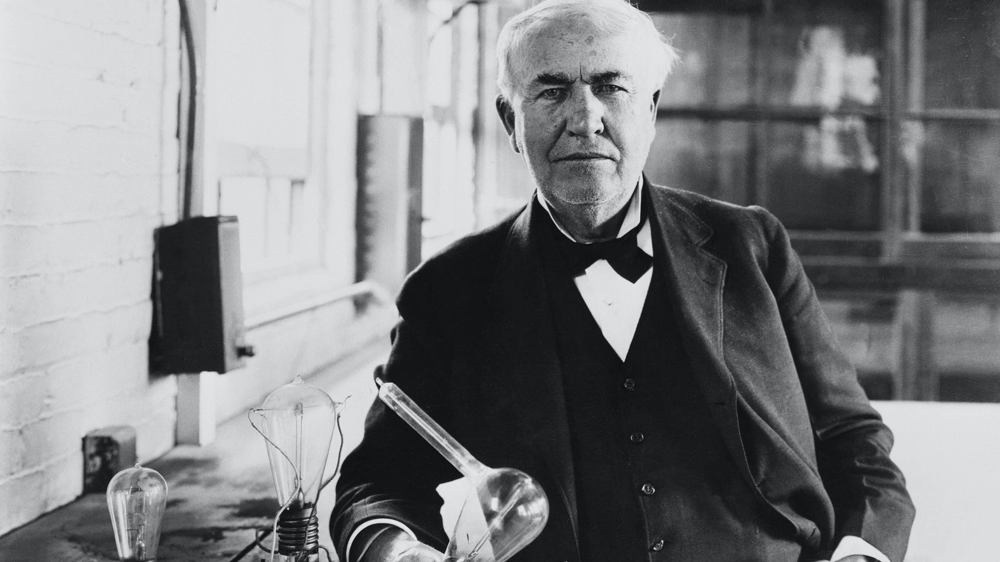

Thomas Edison
America's greatest inventor.

Thomas Edison's inventions exerted tremendous influence on modern life.
Here's a time line of Thomas Edison's Life:
- 1847 – Born in Milan, Ohio
- June 1, 1869 – Granted his first patent for the electric vote recorder
- 1874 – He began developing a multiplex telegraphic system, which could send two messages simultaneously
- 1876 – He established a major innovation in the form of an industrial research lab called Menlo Park
- 1877 – He developed the phonograph
- 1886 – He found a way to improve the Bell Telephone microphone which paved the way for carbon telephone transmitters.
- December 31, 1879 – First public demonstration of his incandescent light bulb
- January 27, 1880 – Granted patent for an electric lamp
- 1891 – He built a Kinetoscope or peep-hole viewer. It was a device installed in penny arcades which allowed people to watch short, simple films.
- 1901 – Obtained US and European patent for his nickel-iron battery
- October 18, 1931 – Died of complications of diabetes in his home in West Orange, New Jersey
“Genius is one percent inspiration and ninety-nine percent perspiration.” – Thomas Edison